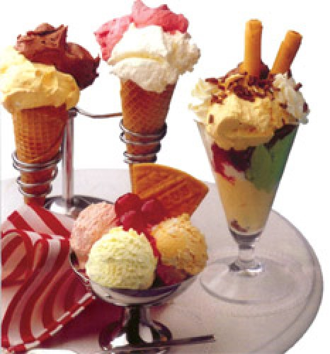
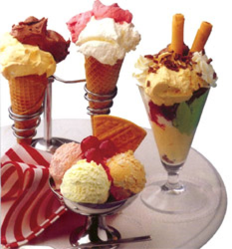

Мороженое Семифреддо
Для рецепта вам потребуется:
- фундук (жареный) - 1 стакан
- сахар - 150г
- вода - 3 ст.л.
- яйцо - 3 шт.
- сливки - 360 мл.
Из 100 гр. сахара и воды сделайте карамель, добавьте фундук. После застывания карамелизированный фундук измельчите в блендере, взбейте 3 желтка, 50 гр. сахара и 360 мл сливок. Измельченный фундук добавьте в сливки с желтками. Взбейте 3 белка, добавив щепотку соли. Осторожно введите белки в получившуюся массу. Поставьте в морозильник на 40 минут.
Сливочное мороженое с манго
Для рецепта вам потребуется:
- кокосовое молоко (густое) - 1.5 мл
- яйцо (желток) - 3 шт.
- сахар - 4 cт.л.
- густые сливки (для взбивания) - 300г
- манго (без косточки, очищенные) - 2 шт.
- миндаль (жареные половинки) - для украшения.
Разогреть в кастрюльке кокосовое молоко, но не кипятить. Взбить в миске желтки с сахаром, добавить несколько столовых ложек теплого кокосового молока и хорошо размешать. Влить остальное кокосовое молоко. Желтки с сахаром и кокосовым молоком нагревать на слабом огне на водяной бане. Размешивать, пока смесь не загустеет. Как только получится густая масса, сразу снять с плиты и остудить смесь. Взбить сливки и добавить к охлажденному крему.
Часть манго нарезать маленькими кубиками, остальное измельчить в миксере или протереть сквозь сито. Измельченную мякоть манго смешать с нарезанной кубиками и все подмешать в остывший крем. Влить крем в невысокую посуду и поставить в морозильник.
Когда крем застынет, вынуть его из морозильника и с помощью миксера превратить в однородную массу. Снова слегка заморозить и еще раз пропустить через миксер. Затем положить в специальную мороженицу с крышкой и хорошо заморозить.
Вынуть мороженое из морозильника за 20-30 минут до подачи на стол и поставить в холодильник. Разложить в порционную посуду и посыпать жареным миндалем.
© Avhadieva
 
Рецепты

Рецепты